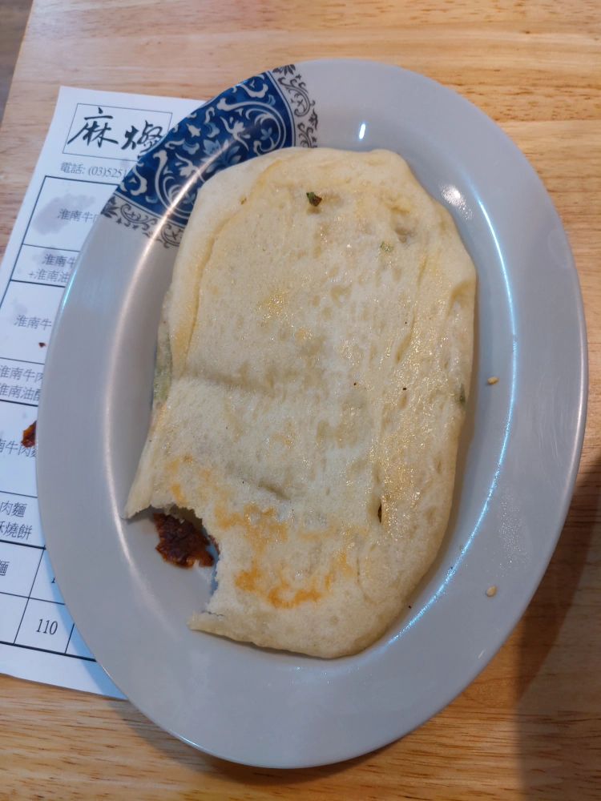

[新竹] 麻燦 淮南牛肉湯
於 2019/12/29 加入二訪的資料，請看本篇文章的後面。
| 餐廳名稱: | 麻燦 淮南牛肉湯 |
|---|---|
| 地 址: | 新竹市中華路二段689號 |
| 營業時間: | 週一~週六 11:30-14:00 17:00-20:30 |
| 可能週日公休，但剛開幕，還在調整，記得到官方粉絲頁確認營業 | |
| 電 話: | 03 525 1121 |
今天又來到新竹國泰醫院 進廠維修，赫然發現對面的新開牛肉湯，標榜是淮南口味，挺新奇的，就進去一探。 原來是少見的 安徽省淮南縣牛肉湯口味，一試之下，還真好吃，破例在一開始就趕快提醒，這位淮南縣大陸新娘 來台灣多年，可能是第一次開店，連同兩位員工，全都沒經驗，很容易手忙腳亂，或東西送錯桌，還有接一些外送訂單，各位請多點耐心， 態度好一點地提醒就好，不要嚇跑了這難得的好味道。
大門口照片，對面就是新竹國泰醫院，緊鄰國泰醫院的停車場，一小時40元，容易客滿。 同一側稍微多走幾步，還有一個停車場，一樣一小時40元，但這邊比較有機會停到車。 當然，四維橋下有公有停車格，一小時20元，但數量少，大概沒什麼機會。
屋內近門口的地方就是廚房與櫃檯，大鍋牛肉湯在這裡熬煮，還有製作燒餅的烤爐。 我是快中午12點進去，一開始人很少，還有一些外帶的客人，但坐沒10分鐘，就客滿了，客人自行找併桌。 店家都用四人桌，只有一張2人桌，但我觀察 1人，2人的客人蠻多的，桌子使用稍微沒效率。
屋內近門口的另一邊，牆上貼著大大的話，解釋淮南縣，還有 麻燦的意義。應該就是闆娘的故鄉。 這幅畫同時也是 麻燦Facebook官方粉絲頁 的封面圖。
點菜單，放在櫃台前面小籃子，旁邊有筆。
最近減肥，少吃澱粉，所以只點了 淮南牛肉湯加淮南油酥燒餅，但燒餅還在製作，晚一點上。 這個牛肉湯微辣，似乎是靠辣油控制辣度的。 湯的部分有點像是清燉的外觀，但是是紅燒的味道，香料用的不錯，蠻好喝的。 牛肉是切成薄片的，跟台灣牛肉麵習慣切成塊狀不一樣，牛肉覺得不多，大概不到10片吧，不過想想價格，可能也只能如此。 青菜似乎是大白菜切長條絲，竟然還是脆的口感，也許是剛放進去。 跟牛肉的薄韌，相互輝映，放在熬得味道很夠的牛肉湯中，整個好喝又好吃。 我認為菜單中的切片牛肉，應該就是這湯中的牛肉，所以覺得肉不過癮的，可以單點一份切片牛肉，自己加入湯中。
小菜 扯骨肉，熱過，再淋一點醬油膏，蠻好吃的。老闆娘知道哪個桌號要扯骨肉，桌號也是店家安排好的，但還是送錯到隔壁桌，隔壁桌根本沒點， 提醒之後，隔壁桌願意付錢買下那一份，老闆娘趕快再做一份，有點鬧騰。
淮南油酥燒餅 終於出爐了，咬了一口，才想起拍照，正面烤得不錯。吃起來也是跟 燒餅油條的燒餅很像，就是單純美好的麵粉香。
可是翻過來，這一面是本來的底部，偏白。淮南的燒餅只烤一面嗎? 真希望有第二位淮南人可以問問，哈哈。 
下次要再來試麻辣有多辣，試炸醬麵，試其他餐點。這位大陸新娘帶來的家鄉味，台灣少見，而且我覺得口味也很合台灣人。目前就是剛開幕手忙腳亂， 請各位盡量在非尖峰時間去拜訪，會比較不容易出錯吧。
二訪資料:
經過很多天的實際作業，服務人員已經熟練很多，流程也改了。點餐現在是拿下列單子，都想好要點什麼 之後，去櫃台點。
左邊是切片牛肉。右邊是扯骨肉。今天實驗把切片牛肉倒入牛肉湯了，是可以，不過原來附在牛肉湯當中的肉片似乎黑一點，可能是煮比較久吧。
安徽炸醬麵，還加了 蘿蔔絲、黃瓜絲、豆芽菜， 比較偏大陸的形式，如果是北京炸醬麵，理論上還要再多幾種料。也還行，但是沒有牛肉湯那麼驚艷。
反正還會常去國泰看病，有機會的話，再多吃幾次。